SECCIÓN 9R
PARTE DELANTERA DE LA CARROCERÍA
ESPECIFICACIONES
Especificaciones de apriete de la sujeción
Aplicación | N•m | Lb-pie | Lb-pulg. |
Tornillos del guardabarros (parte trasera del tablero) | 4 | - | 35 |
Tornillo del guardabarros al montante A | 8 | - | 71 |
Tornillo del tablero del parachoques delantero al guardabarros | 1,5 | - | 13 |
Tornillos de la bisagra | 25 | 18 | - |
Tornillos del cierre del capó | 8,5 | - | 75 |
Tornillos de sujeción de la bisagra al capó | 25 | 18 | - |
Tornillos inferiores de la aleta guardabarros | 10 | - | 89 |
Tornillos de la chapa guardabarros | 1,5 | - | 13 |
Tornillos superiores de la aleta guardabarros | 10 | - | 89 |
MANTENIMIENTO Y REPARACIÓN
Servicio en el vehículo
Lubricación
Las bisagras del capó y los mecanismos de cierre requieren una lubricación periódica para conseguir un funcionamiento adecuado. Consulte la Sección
0B, Información general para conocer los tipos específicos de lubricantes y los intervalos de lubricación.
Elementos de sujeción
Aviso: Metales distintos en contacto directo pueden corroerse rápidamente. Asegúrese de utilizar los elementos de sujeción correctos para evitar una corrosión prematura.
En los modelos actuales se utilizan muchos componentes de aluminio. El aluminio en contacto con el acero puede oxidarse rápidamente si no se protege con aislantes o acabados especiales.
Los elementos de sujeción utilizados disponen de un acabado especial que les proporciona una protección adecuada contra la corrosión. Estos dispositivos de sujeción especiales tienen un color diferente de modo que se distingan fácilmente de los elementos roscados de métrica estándar, los cuales poseen un color azul intermedio.
Cuando sustituya un elemento de sujeción, evite la sustitución de otros elementos similares en el mismo lugar.
Materiales anticorrosión
Con el fin de proporcionar una resistencia a la oxidación, se han aplicado ciertos materiales anticorrosión a las superficies interiores de la mayoría de los paneles metálicos. Cuando se efectúe el mantenimiento de estos paneles, recúbralos con un material anticorrosivo del tipo de servicio si alguno de ellos ha sufrido algún deterioro.
Sellado de la parte delantera
Todos aquellos puntos en los que puedan producirse infiltraciones de agua se sellan durante el proceso de fabricación con sellante de larga duración y alta calidad. Si fuera necesario sellar de nuevo ciertas zonas específicas, utilice un sellante de alta calidad y de consistencia intermedia que conserve sus características específicas, después del proceso de curado, y que pueda pintarse si fuera preciso.
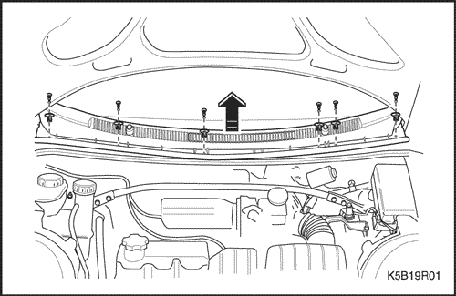


Rejilla de ventilación del capó
Procedimiento de desmontaje
- Desmonte el conjunto de los brazos limpiaparabrisas. Consulte la sección 9D, Sistema limpia/lavaparabrisas.
- Desmonte los clips de la rejilla de ventilación del capó.
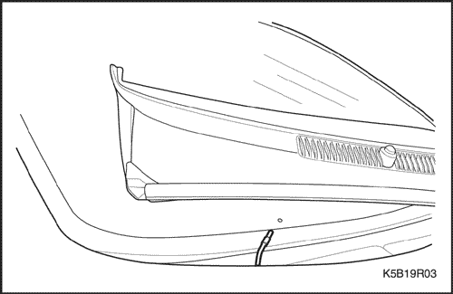
- Desmonte la rejilla de ventilación del capó.
- Desenchufe el conector del manguito de lavaparabrisas delantero.
Procedimiento de montaje
- Enchufe el conector del manguito de lavaparabrisas delantero.
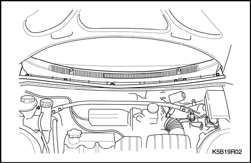
- Monte la rejilla de ventilación del capó con sus clips.
- Monte el conjunto de los brazos limpiaparabrisas. Consulte la sección 9D, Sistema limpia/lavaparabrisas.
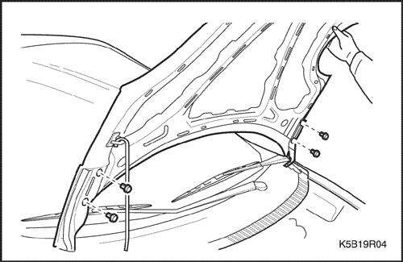
Capó
Procedimiento de desmontaje
Importante: Monte las protecciones sobre los guardabarros y el parabrisas para evitar que se dañe la pintura, el cristal y las molduras al montar y desmontar el capó.
- Levante y sujete el capó.
- Quite los tornillos y el capó.
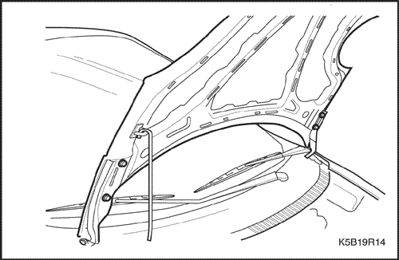
Procedimiento de montaje
Aviso: Metales distintos en contacto directo pueden corroerse rápidamente. Asegúrese de utilizar los elementos de sujeción correctos para evitar una corrosión prematura.
- Monte el capó con sus tornillos.
- Compruebe si el capó está bien alineado.
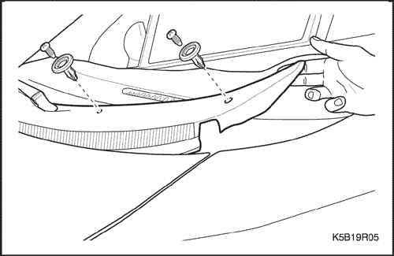
Bisagras del capó
Procedimiento de desmontaje
- Desmonte el capó. Consulte el apartado "Capó" de esta sección.
- Desmonte la rejilla de ventilación del capó. Consulte el apartado "Rejilla de ventilación del capó" de esta sección.
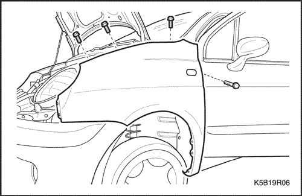
- Quite los tornillos de la parte superior del guardabarros.
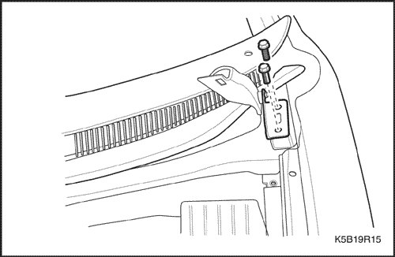
- Quite los tornillos y la bisagra del capó.
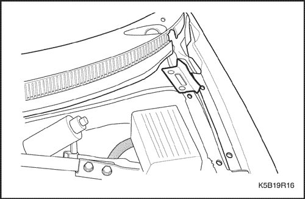
Procedimiento de montaje
Aviso: Metales distintos en contacto directo pueden corroerse rápidamente. Asegúrese de utilizar los elementos de sujeción correctos para evitar una corrosión prematura.
- Monte la bisagra del capó con sus tornillos.
Apretar
Apriete los tornillos de la bisagra del capó hasta 25 N•m (18 lb-pie).
- Coloque los tornillos de la parte superior del guardabarros.
- Monte la rejilla de ventilación del capó con sus tornillos.
- Monte el capó. Consulte el apartado "Capó" de esta sección.
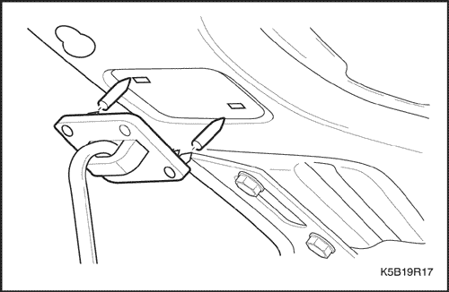
Varilla de sujeción del capó
Procedimiento de desmontaje
- Mantenga abierto el capó.
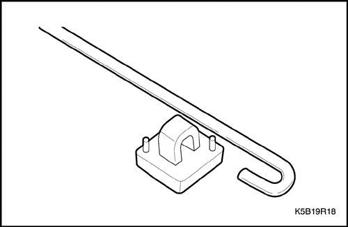
- Desmonte la varilla de sujeción del capó haciendo palanca ligeramente sobre la base del soporte del radiador.
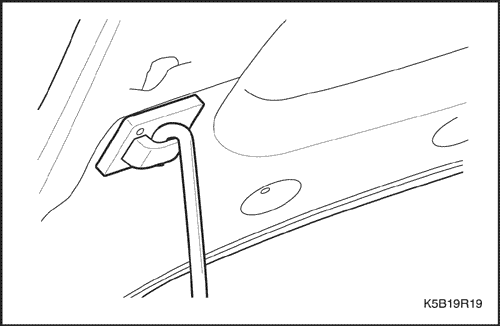
Procedimiento de montaje
- Monte la varilla de sujeción del capó volviendo a encajar la base en el soporte del radiador.
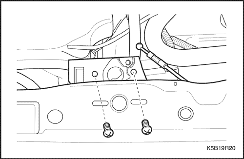
Cierre del capó
Procedimiento de desmontaje
- Abra el capó.
- Quite los tornillos y desmonte el cierre del capó.
- Desconecte el cable de apertura del cierre del capó.
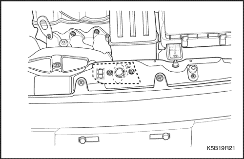
Procedimiento de montaje
- Conecte el cable de apertura al cierre del capó.
Aviso: Metales distintos en contacto directo pueden corroerse rápidamente. Asegúrese de utilizar los elementos de sujeción correctos para evitar una corrosión prematura.
- Monte el cierre del capó con sus tornillos.
Apretar
Apriete los tornillos del cierre del capó hasta 8,5 N•m (75 lb-pulg.).
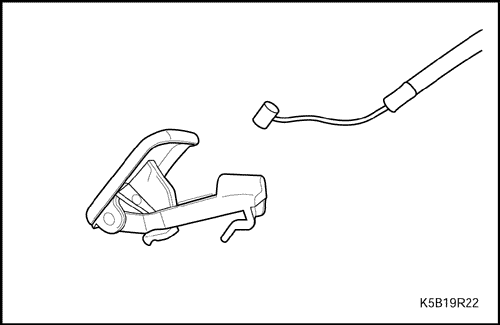
Palanca de apertura del capó
(Indicado para conducción a izquierdas, conducción a derechas similar)
Procedimiento de desmontaje
- Desmonte del panel de instrumentos el cierre del capó.
- Quite el cable de la palanca de apertura del capó.
Procedimiento de montaje
- Conecte el cable a la palanca de apertura del capó.
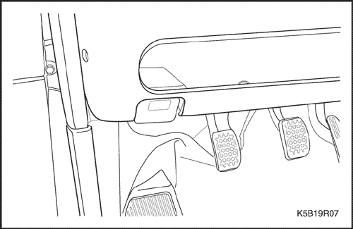
Aviso: Metales distintos en contacto directo pueden corroerse rápidamente. Asegúrese de utilizar los elementos de sujeción correctos para evitar una corrosión prematura.
- Monte en el panel de instrumentos la palanca de liberación del cierre del capó.
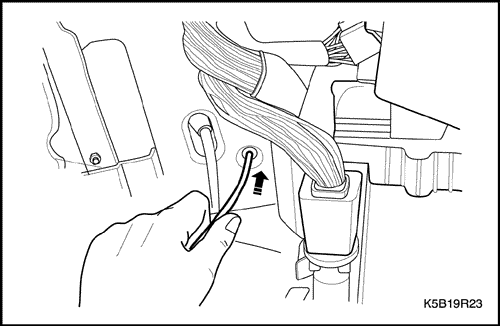
Cable de apertura del cierre del capó
(Indicado para conducción a izquierdas, conducción a derechas similar)
Procedimiento de desmontaje
- Desmonte del panel de instrumentos el cable de apertura del cierre del capó. Consulte el apartado "Palanca de apertura del cierre del capó" de esta misma sección.
- Empuje el cable hacia el compartimento motor a través del orificio de la carrocería.
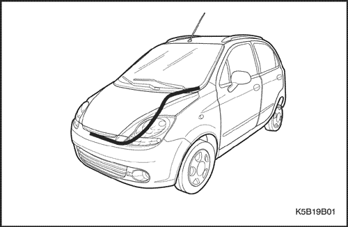
- Abra y sujete convenientemente el capó.
- Desconecte el cable de apertura del cierre del capó. Consulte el apartado "Cierre del capó" de esta misma sección.
- Quite la tira de plástico y desmonte el cable de apertura del cierre del capó.
Procedimiento de montaje
- Conecte el cable de apertura al cierre del capó. Consulte el apartado "Cierre del capó" de esta misma sección.
- Coloque el cable de apertura del cierre del capó con su tira de plástico.
- Empuje el cable hacia el habitáculo a través del orificio de la carrocería.
- Conecte el cable a la palanca de apertura del capó. Consulte el apartado "Palanca de apertura del cierre del capó" de esta misma sección.

Aleta guardabarros
Procedimiento de desmontaje
- Levante y apoye el vehículo adecuadamente.
- Quite los clips, los tornillos y la chapa guardabarros del paso de rueda.
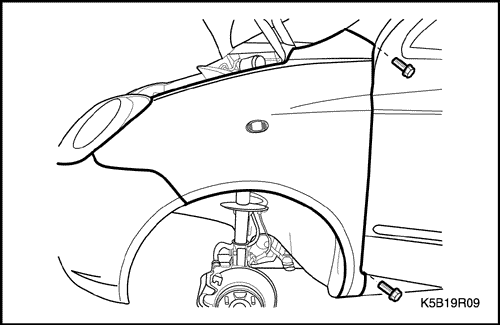
- Quite el tornillo de la base del guardabarros.
- Abra la puerta delantera. Quite el tornillo que hay en el montante A.
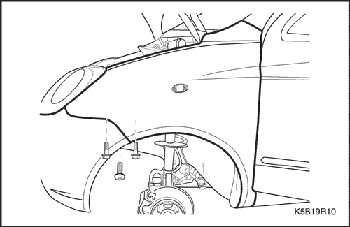
- Quite los tornillos del lado del protector del parachoques delantero.
- a. Tornillos del lado del protector del parachoques.
- Quite el tornillo que hay debajo del guardabarros.
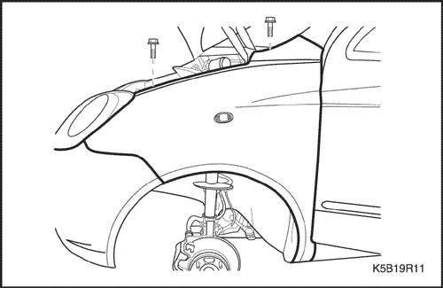
- Baje el vehículo.
- Desmonte la rejilla de ventilación del capó. Consulte el apartado "Rejilla de ventilación del capó" de esta sección.
- Quite el tornillo de la parte superior del guardabarros.
- Quite los tornillos de la parte superior del guardabarros.
- Desmonte el guardabarros.
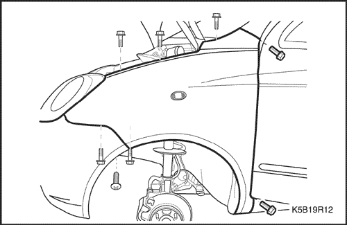
Procedimiento de montaje
- Monte la aleta guardabarros.
Aviso: Metales distintos en contacto directo pueden corroerse rápidamente. Asegúrese de utilizar los elementos de sujeción correctos para evitar una corrosión prematura.
- Coloque los tornillos de la parte superior del guardabarros.
Apretar
Apriete los tornillos del guardabarros hasta 10 N•m (89 lb-pie).
Apriete los tornillos del guardabarros hasta 4 N•m (35 lb-pie).
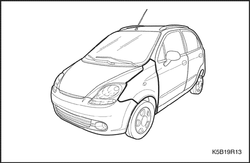
- Monte la rejilla de ventilación del capó. Consulte el apartado "Rejilla de ventilación del capó" de esta sección.
- Levante y apoye el vehículo adecuadamente.
- Ponga los tornillos que hay debajo del guardabarros.
- Ponga los tornillos del lado del tablero del parachoques delantero.
- Abra la puerta delantera y ponga el tornillo del montante A.
- Ponga el tornillo de la base del guardabarros.
- Monte la chapa guardabarros del paso de rueda con sus tornillos.
- Baje el vehículo.
DESCRIPCIÓN GENERAL Y FUNCIONAMIENTO DEL SISTEMA
Parte delantera de la carrocería
Este vehículo tiene una carrocería monocasco con un bastidor que sirve de soporte al motor y a la caja de cambios. Los paneles de las aletas guardabarros y el soporte del radiador son parte integral de la carrocería.